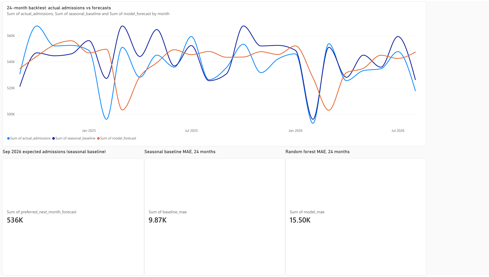
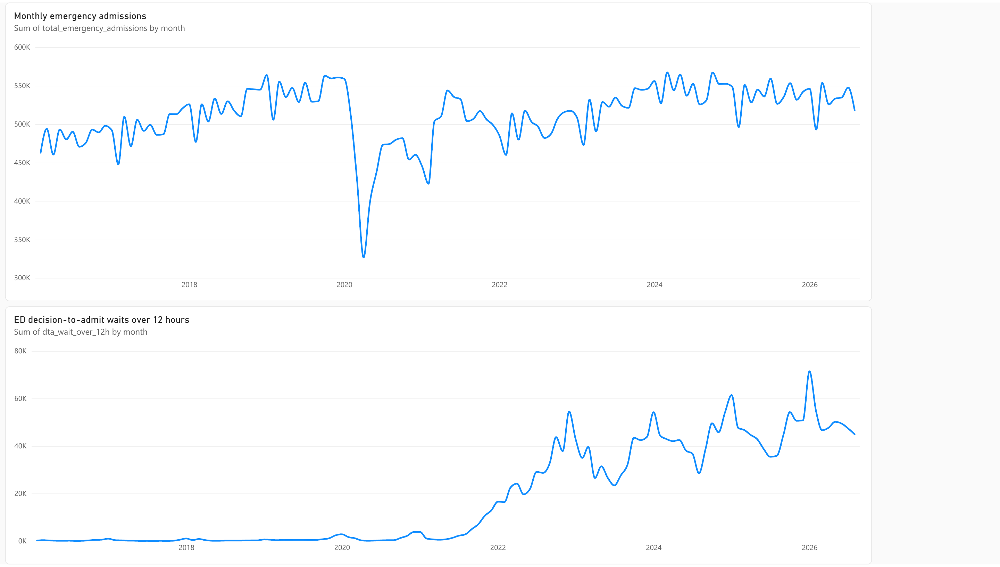
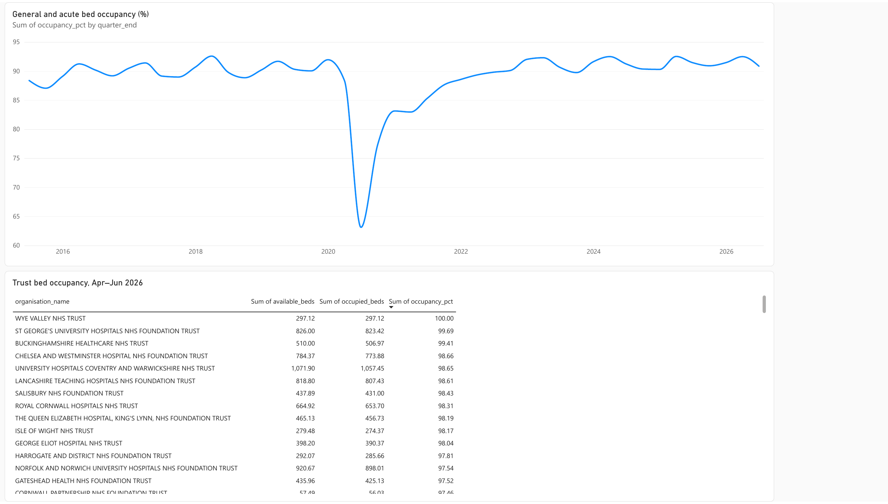

Project report · Healthcare analytics
Hospital Demand
& Bed Capacity Analytics
Understanding emergency demand, bed pressure, and the limits of a more complex forecast.
Technologies Python · SQL · SQLite · scikit-learn · Power BI
Project overview
I built a reproducible pipeline and three-page Power BI report using published NHS England statistics. The work connects source-file ingestion, SQLite analysis, forecast evaluation, and reporting to examine changes in emergency demand and bed occupancy, then test how well next month’s admissions can be estimated.
The analysis covers 127 months of emergency demand, 45 quarters of bed data, and a latest capacity snapshot of 153 NHS trusts. These are aggregate hospital statistics, with no individual patient records.
How I built it
- Make the sources reproducible. Import NHS workbooks and CSVs into SQLite, pinning source URLs and SHA-256 hashes so a revised publication cannot silently change a rebuild.
- Check the measures before reporting. Reconcile admission routes and types, verify consecutive reporting periods, recalculate occupancy, and reconcile the latest trust bed totals to the national quarter before handing the exports to Power BI.
- Compare forecasts on later dates. Test a random forest against the same month last year over September 2024–August 2026. Both methods estimate the same monthly admissions target across 24 test months.
Analytical decisions
Calendar features, lagged admissions, and a shifted three-month average use only information available before the target month. The updated evaluation retrains the random forest before each of 24 target months, using only preceding observations. Each prediction records its training cutoff. The original fixed-August-2024 model remains a comparator on the same targets. This tests repeated one-month-ahead forecasts, rather than a single forecast of the next two years.
Emergency demand and bed occupancy have different reporting periods and provider coverage. I keep them separate instead of joining them into a combined rate. The final model is refitted through August 2026 only after evaluation, while the better-performing seasonal baseline remains the preferred demonstration forecast.
Results
The seasonal baseline produced approximately 24.8% lower mean absolute error than the expanding-window random forest across the 24-month test period. Its average absolute error was 9,874 admissions per month, compared with 13,135 for the expanding forest. The original fixed-fit forest had an error of 15,501; monthly retraining improved it but did not beat the baseline.
Demand and admission delays. August 2026 emergency admissions were 517,868, down 1.6% from 526,399 in August 2025. Over the same comparison, waits exceeding 12 hours after a decision to admit rose from 35,909 to 44,951 (+25.2%). Fewer admissions therefore did not coincide with fewer long admission delays.
Bed capacity. General-and-acute overnight occupancy averaged 90.85% in April–June 2026, compared with 91.45% a year earlier, a decrease of 0.60 percentage points. Around 91 of every 100 available beds remained occupied on average; this does not describe spare capacity at a particular hospital or time. These separate series do not establish that occupancy caused admission delays.
| Forecast method | Mean absolute error Admissions / month |
|---|---|
| Same month last year · preferred | 9,874.21 |
| Random forest · expanding window, 24 refits | 13,134.67 |
| Original random forest · fixed fit | 15,501.42 |
Updated editable report source. The PBIP source preview adds 23 explicit DAX measures, date-range selectors, a trust filter, and interpretation panels. Occupancy uses a ratio of beds for a quarter and a bed-day-weighted ratio across complete quarters; the fixed trust snapshot stays separate from the national time series. Source checks pass, but native Power BI refresh, DAX execution and rendered interactions still need verification in Desktop. This preview has not replaced the original published report or screenshots.


Figure 1. Original forecast report
This saved screenshot shows the original fixed-fit forest (MAE 15,501), rather than the updated expanding-window evaluation above. Select the screenshot to enlarge.
Supporting reports: emergency demand and bed pressure


Figure 2. Emergency demand and admission delays
Monthly emergency admissions and counts of waits exceeding 12 hours after a decision to admit. These are threshold counts, not average waiting times or total time in the emergency department.


Figure 3. Bed occupancy and trust capacity
Quarterly general-and-acute overnight occupancy and the latest trust-level bed snapshot. Occupancy is average occupied beds divided by average available beds.
Data, limitations & next steps
Emergency demand covers February 2016–August 2026; bed data covers June 2015–June 2026. Provider coverage, reporting changes, and the pandemic affect comparisons over time. The report describes national demand and capacity rather than individual patient flow or improvements in care.
The baseline’s September 2026 forecast of 535,580 admissions uses information through August 2026. It is a historical forecast, and the Power BI screenshots are saved report views. The 24-month evaluation is a retrospective comparison on an already examined period. It uses preceding monthly observations but does not simulate NHS publication delays, or establish performance for other periods or individual hospitals.
Takeaway & next step. A useful forecasting project needs a credible baseline and clearly defined measures before it needs a more complex model. The expanding-window backtest now covers 24 training cutoffs. Next, I would account for publication delays and evaluate prediction intervals to communicate uncertainty alongside the point estimate.
Technical evidence: forecast implementation · reconciliation checks · published results · original fixed-fit report PDF.
Original sources: NHS England emergency statistics · overnight bed statistics.